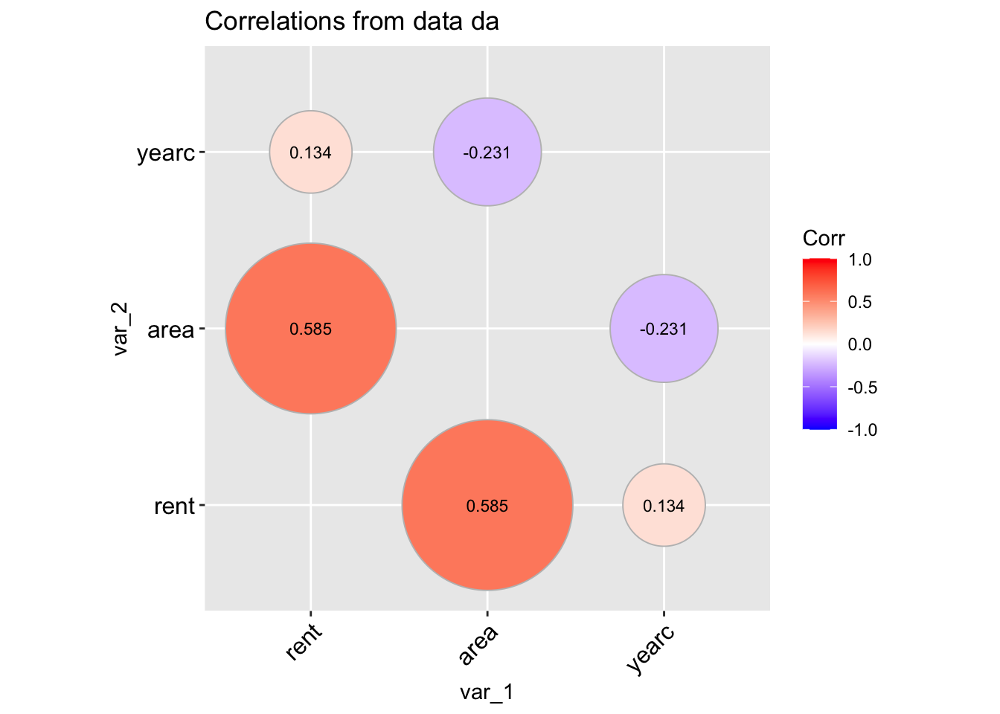

Mikis Stasinopoulos, Bob Rigby, Fernanda de Bastiani, Gillian Heller, Thomas Kneib, Andreas Mayr, Robert Rigby, Reto Stauffer, Nikolaus Umlauf, Achim Zeileis.
Introduction
This is a booklet for the packages gamlss.prepdata and its functionality. It tries to describe the available functions and their output.
The latest versions of the packages gamlss, gamlss2 and gamlss.prepdata are shown below:
Note that the gamlss.prepdata came originally from the package gamlss.ggplots. The problem was that the package gamlss.ggplots become too large for maintenance so we split it in two.
Because the package is at an experimental stage, some of the functions are hidden to allow time for checking. The hidden functions can be accessed using gamlss.prepdata:::.
The functions available in gamlss.prepdata are function to be used before-fitting, that is, before the use of the functions gamlss() or gamlss2(). The functions in gamlss.prepdata can be divided into the following categories;
information about the data functions
manipulation of variables or observations functions
plotting functions;
partition functions
The information within the data and the plotting functions can help the modelling by providing information about the;
the response variable and its distribution
about the explanatory variables and in particular
their spead of values;
missing values;
outliers;
correlation between explanatory variables
interactions between explanatory variables
the type of relationships between the response and explanatory variables, i.e. linear or not-linear.
The manipulation of variables functions had to do with;
transformation of variables to be more suitable for modelling and
feature extraction.
Note that by feature we mean a function of the more that one explanatory variables while by transformation we use only one \(x\).
The data partitions has to do with ensuring better model selection. Note that data partition is part of what we could call data manipulations which includes merging and transforming data sets but also data partition. We only deal with the latest.
All the pre-fitting functions have to do with data and distribution families. Their names start with data and family respectively; For example
data_NAME prints information, plots or manipulate data frames;
family_NAME plots or dislay properies of different theoretical GAMLSS distributions.
The basic model
The aim of this vignette is to manipilate data before a distributional regression analysis is applied to the data. The general distributional regression model is; \[
\begin{split}
\textbf{y} & \stackrel{\small{ind}}{\sim } \mathcal{D}( \boldsymbol{\theta}_1, \ldots, \boldsymbol{\theta}_k) \nonumber \\
g_1(\boldsymbol{\theta}_1) &= \mathcal{ML}_1(\textbf{x}_{11},\textbf{x}_{21}, \ldots, \textbf{x}_{p1}) \nonumber \\
\ldots &= \ldots \nonumber\\
g_k(\boldsymbol{\theta}_k) &= \mathcal{ML}_k(\textbf{x}_{1k},\textbf{x}_{2k}, \ldots, \textbf{x}_{pk}).
\end{split}
\tag{1}\] where we assume that the response variable \(y_i\) for \(i=1,\ldots, n\), is independently distributed having a distribution \(\mathcal{D}( \theta_1, \ldots, \theta_k)\) with \(k\) parameters and where all parameters could be effected by the explanatory variables \(\textbf{x}_{1},\textbf{x}_{2}, \ldots, \textbf{x}_{p}\). The \(\mathcal{ML}\) represents any regression type machine learning algorithm i.e. LASSO, Neural networks etc.
When only additive smoothing terms are used in the fitting the model can be written as; \[\begin{split}
\textbf{y} & \stackrel{\small{ind}}{\sim } \mathcal{D}( \boldsymbol{\theta}_1, \ldots, \boldsymbol{\theta}_k) \nonumber \\
g_1( \boldsymbol{\theta}_1) &= b_{01} + s_1(\textbf{x}_{11}) + \cdots, +s_p(\textbf{x}_{p1}) \nonumber\\
\ldots &= \ldots \nonumber\\
g_k( \boldsymbol{\theta}_k) &= b_{0k} + s_1(\textbf{x}_{1k}) + \cdots, +s_p(\textbf{x}_{pk}).
\end{split}
\tag{2}\] which is the GAMLSS model introduced by Rigby and Stasinopoulos (2005).
The problem with trying to fitting any model is that the data should be prepared for the analysis. This is the aim of this package. To prepare data and get out useful information which could be used for the modelling stage.
Information
There are several function for obtaining information from data. Those function could get;
general information about the data;
information about the variables in the data;
information about observations in the data;
All function have as a first argument a data.frame.
Here are the functions of the package.
data_dim()
This function gives information about the dimensions of the data.frame; The function is similar to the R function dim(), but gives a bit more information. Its output is the original data frame which means it can be use in a series of piping commands.
rent99 |>data_dim()
**************************************************************
**************************************************************
the R class of the data is: data.frame
the dimensions of the data are: 3082 by 9
number of observations with missing values: 0
% of NA's in the data: 0 %
**************************************************************
**************************************************************
data_which_na()
This function gives information about which variables have missing observations and how many;
rent99 |>data_which_na()
rent rentsqm area yearc location bath kitchen cheating
0 0 0 0 0 0 0 0
district
0
The output of the function is the original data frame nothing is changing.
data_omit
This function uses the R function na.omit() to. omit lines with NA’s in the data;
rent99 |>data_omit()
**************************************************************
**************************************************************
the R class of the data is: data.frame
the dimensions of the data before omition are: 3082 x 9
the dimensions of the data saved after omition are: 3082 x 9
the number of observations omited: 0
**************************************************************
**************************************************************
The output of the function is a new data frame with all NA’s omitted.
data_names()
This function provides the names of the variables (same as Rnames() function);
rent99 |>data_names()
**************************************************************
**************************************************************
the names of variables
[1] "rent" "rentsqm" "area" "yearc" "location" "bath" "kitchen"
[8] "cheating" "district"
**************************************************************
**************************************************************
The output of the function is the original data frame.
data_distinct()
The district values for each variable are shown here.
rent99 |>data_distinct()
rent rentsqm area yearc location bath kitchen cheating
2723 3053 132 68 3 2 2 2
district
336
The output of the function is the original data frame.
data_str()
The function data_str() (similar to the R function str()) provides information about the types of variable exist in the data.
rent99 |>data_str()
**************************************************************
**************************************************************
the structure of the data
'data.frame': 3082 obs. of 9 variables:
$ rent : num 110 243 262 106 133 ...
$ rentsqm : num 4.23 8.69 8.72 3.55 4.45 ...
$ area : int 26 28 30 30 30 30 31 31 32 33 ...
$ yearc : num 1918 1918 1918 1918 1918 ...
$ location: Factor w/ 3 levels "1","2","3": 2 2 1 2 2 2 1 1 1 2 ...
$ bath : Factor w/ 2 levels "0","1": 1 1 1 1 1 1 1 1 1 1 ...
$ kitchen : Factor w/ 2 levels "0","1": 1 1 1 1 1 1 1 2 1 1 ...
$ cheating: Factor w/ 2 levels "0","1": 1 2 2 1 2 2 1 2 1 1 ...
$ district: int 916 813 611 2025 561 541 822 1713 1812 152 ...
**************************************************************
**************************************************************
table of the class of variabes
factor integer numeric
4 2 3
**************************************************************
**************************************************************
distinct values in variables
rent rentsqm area yearc location bath kitchen cheating
2723 3053 132 68 3 2 2 2
district
336
consider to make those characters vectors into factors:
location bath kitchen cheating
**************************************************************
**************************************************************
The output of the function is the original data frame.
data_shorter_names()
If variables in the data have very long names are difficult to handle in formulae when modelling. The function data_shorter_names() abbreviate the names of the explanatory variables so they can easily introduced in a formulae;
rent99 |>data_shorter_names()
**************************************************************
**************************************************************
the names of variables
[1] "rent" "rents" "area" "yearc" "locat" "bath" "kitch" "cheat" "distr"
**************************************************************
**************************************************************
No long names exist in this specific data set so there is no action. The output of the function is the original data frame with new names.
Warning
Note that there is a danger here to to use a small max option and you can end up with identical names for variables.
data_rename()
If you wish to rename variable use the function data_rename().
The output of the function is the original data frame with new names.
Manipulation of variables within data
The next set of functions manipulate variables withing data.frames.
data_cha2fac()
Often variables in the data sets are read as character vectors while in the analysis we need them as factors. This function transforms any character vector (with relatively small number of distinct values) into a factor;
rent99 |>data_cha2fac() -> da
**************************************************************
not character vector was found
Since no character were found nothing have changed. The output of the function is a new data frame.
data_few2fac()
There are occasions in which some variables have very few distinct observations, and it will be better to treat them as factors. The function data_few2fac() transfer vectors with few distinct values to factors.
The output of the function is a new data frame. This can be seen by using the R function str();
rent99 |>data_few2fac() -> da
**************************************************************
rent rentsqm area yearc location bath kitchen cheating
2723 3053 132 68 3 2 2 2
district
336
**************************************************************
4 vectors with fewer number of values than 10 were transformed to factors
**************************************************************
**************************************************************
Occasionally we want to transfer integer variables vectors with a very large range of value into numeric vectors, especially for graphics. The function data_int2num() is doing this;
rent99 |>data_int2num() -> da
**************************************************************
rent rentsqm area yearc location bath kitchen cheating
2723 3053 132 68 3 2 2 2
district
336
2 integer vectors with more number of values than 50 were transformed to numeric
**************************************************************
The output of the function is a new data frame.
data_rm()
For plotting data sets it is easier if we could keep only the relevant variables. The function data_rm() can do that;
data_rm(rent99, c(2,9)) -> dadim(rent99)
[1] 3082 9
dim(da)
[1] 3082 7
The output of the function is a new data frame. Note that this could be also done using the function select() of the package dplyr, or our own data_select() function.
This function looks for variables with a unique distinct value (most likely factors left from a previous subset() operations) and removes them form the data.
da |>data_rm1val()
The output of the function is a new data frame.
data_exclude_class()
This function looks for variable (columns) of a specified R class and remove them from the data. The default class to remove is factor.
The reason why any graphical methods is used at a preliminary stage of a distribution regression analysis is to get a taste of the data in order to help to identify;
outliers in both the response and the explanatory variables.
transformatons needed for explanatory variables
linear or non-linear correlation between the explanatory variables
the existence of pairwise interactions between features.
Outliers, in the continuous explanatory variables of the data, effect the curve fitting (linear or smooth non-linear) between the parameters of the distribution of the response and the features. Often, the removal of outliers could make the fit more robust. The function data_zscores() use simple a algorithm for identifying possible outliers in continuous explanatory variables.
Note
It is difficult, at the preliminary stage of the analysis, where no model has been fitted yet to identify outliers for factors. This is, because outliers in factors do not look strange when we look at the variables individually. Their outliers status is apparent only when we looked at them in combination with other variables but this is performed at the modelling stage.
data_plot()
The function data_plot plots all the variable of the data individually; It plots the continuous variable as histograms with a density plots superimposed, see the plot for rent and yearc. As an alternative a dot plots can be requested see for an example in Section 4.8. For integers the function plots needle plots, see area below and for categorical the function plots bar plots, see location, bathkitchen and cheating below.
da |>data_plot()
100 % of data are saved,
that is, 3082 observations.
Warning: Removed 2 rows containing missing values or values outside the scale range
(`geom_bar()`).
Removed 2 rows containing missing values or values outside the scale range
(`geom_bar()`).
The function could saves the ggplot2 figures.
data_xyplot()
The functions data_xyplot() plots the response variable against each of the independent explanatory variables. It plots the continuous against continuous as scatter plots and continuous variables against categorical as box plot.
Note
At the moment there is no provision for categorical response variables.
da |>data_xyplot(response=rent )
100 % of data are saved,
that is, 3082 observations.
`geom_smooth()` using method = 'gam' and formula = 'y ~ s(x, bs = "cs")'
`geom_smooth()` using method = 'gam' and formula = 'y ~ s(x, bs = "cs")'
The output of the function saves the ggplot2 figures.
data_bucket()
The function data_bucket can be used to identifies hight skewness and kurtosis on continuous variables in the data. Note that if the continuous variable is normaly distribueterd looking should be in the center of the figure.
data_bucket(da, response=rent )
100 % of data are saved,
that is, 3082 observations.
rent area yearc location bath kitchen cheating
2723 132 68 3 2 2 2
data_cor()
The function data_corr() is taking a data.frame object and plot the correlation coefficients of all its continuous variables.
data_cor(da, lab=TRUE)
100 % of data are saved,
that is, 3082 observations.
4 factors have been omited from the data
Warning in data_cor(da, lab = TRUE):
A different type of plot can be produce if we use;
data_cor(da, method="circle", circle.size =40)
100 % of data are saved,
that is, 3082 observations.
4 factors have been omited from the data
Warning in data_cor(da, method = "circle", circle.size = 40):

To get the variables with higher, say, than $0.4 $ correlation values use;
Tabcor <-data_cor(da, plot=FALSE)
100 % of data are saved,
that is, 3082 observations.
4 factors have been omited from the data
Warning in data_cor(da, plot = FALSE):
high_val(Tabcor, val=0.4)
name1 name2 corrs
[1,] "rent" "area" "0.585"
data_void()
Warning
This function is new. Its theoretical foundation are not proven yet. The function needs testing and therefore it should be used with causion.
The idea behind the function is to be able to identify whether the data in the direction of two continuous variables say \(x_i\) and \(x_j\) have a lot of empty spaces. The reason is that empty spaces effect prediction since interpolation at empty spaces is dengerous.
The function data_void() is taking a data.frame object and plot the percentage of empty spaces for all pair-wise continuous variables. The function used the foreach() function of the package foreach to allow parallel processing.
registerDoParallel(cores =9)data_void(da)
100 % of data are saved,
that is, 3082 observations.
4 factors have been omited from the data
Warning in data_void(da):
A different type of plot can be produce if we use;
data_void(da, method="circle", circle.size =40)
100 % of data are saved,
that is, 3082 observations.
4 factors have been omited from the data
Warning in data_void(da, method = "circle", circle.size = 40):
stopImplicitCluster()
To get the variables with highter than $0.4 $ values use;
Tabvoid <-data_void(da, plot=FALSE)
100 % of data are saved,
that is, 3082 observations.
4 factors have been omited from the data
The function data_copr() is taking a data.frame object and plot the partial correlation coefficients of all its continuous variables.
data_pcor(da, lab=TRUE)
100 % of data are saved,
that is, 3082 observations.
4 factors have been omited from the data
Warning in data_pcor(da, lab = TRUE):
To get the variables with highter than $0.4 $ partial correlation values use;
Tabpcor <-data_pcor(da, plot=FALSE)
100 % of data are saved,
that is, 3082 observations.
4 factors have been omited from the data
Warning in data_pcor(da, plot = FALSE):
high_val(Tabpcor, val=0.4)
name1 name2 corrs
[1,] "rent" "area" "0.638"
data_inter()
The function data_inter() takes a data.frame, fits all pair-wise interactions of the explanatory variables against the response (using a normal model) and produce a graph displaying their significance levels. The idea behind this is to identify possible first order interactions at an early stage of the analysis. Note that at the moment it works with continuous variables as response.
da |> gamlss.prepdata:::data_inter(response= rent)
100 % of data are saved,
that is, 3082 observations.
100 % of data are saved,
that is, 3082 observations.
tinter
area yearc location bath kitchen cheating
area NA 0.014 0.001 0.119 0.000 0.000
yearc NA NA 0.000 0.027 0.154 0.226
location NA NA NA 0.000 0.000 0.578
bath NA NA NA NA 0.868 0.989
kitchen NA NA NA NA NA 0.719
cheating NA NA NA NA NA NA
To get the variables with lower than $0.05 $ significant interactions use;
The function data_response() plots four different plots related to a continuous response variable. It plots the histogram (and the density function), a dot plot of the response in the original scale and in the z-score scale. The z-score scale is defined by fitting a distribution to the variable (normal or SHASH) and then taking the residuals, see also next section. The dot plots are good in identify highly skew variables and unusual observations. They display the median and inter quantile range of the data. The y-axis of a dot plot is a randomised uniform variable (therefore the plot could look slightly different each time.)
da |>data_response(, response=rent)
100 % of data are saved,
that is, 3082 observations.
the class of the response is numeric is this correct?
a continuous distribution on (0,inf) could be used
Outliers
data_zscores()
One could fit any four parameter (GAMLSS) distribution, defined on \(-\infty\) to \(\infty\), to any continuous variable, where skewness and kurtosis is suspected and take the quantile residuals (or z-scores) as the transformed values x-values. The function y_zscores() performs just this. It takes a continuous variable and fits a continuous four parameter distribution and gives the z-scores. The fitting distribution can be specified by the user, but as default we have the SHASHo distribution. Below we demonstrate that the function y_zscores() is equivalent to fitting the SHASHo distribution to the continuous variable and then take the quqntile residuals from the fitted model.
da |>data_zscores()
In order to see how the z-scores are calculated consider the function y_zscores() which is taking an individual variables z-scores;
z <-y_zscores(rent99$rent, plot=FALSE)
The function is equivalent of fitting a constant model to all parameters of a distribution and taking the quantile residuals (or z=scores). The default distribution is the four parameter SHASHo distribution.
library(gamlss2)m1 <-gamlssML(rent99$rent, family=SHASHo) # fitting a 4 parameter distribution cbind(z,resid(m1))[1:5,]# and taking the residuals
The function data_outliers() uses the z-scores technique described above in order to detect outliers in the continuous data in the model. It fits a SHASHo distribution to the continuous variable in the data and uses the residual to identify outliers for those continuous variables.
$rent
named numeric(0)
$area
named integer(0)
$yearc
named numeric(0)
As it happend no individual variable outliers were highlighted in the rent data using the z-scores methodology.
data_leverage()
The function data_leverage() uses the linear model methodology to identify unusual observations as a group within the explnatory variables. It fit a linear model to all explanatory variables in the data, calculate the leverge points and plots them.
rent99[, -c(2,9)] |>data_leverage( response=rent)
100 % of data are saved,
that is, 3082 observations.
4 factors have been omited from the data
Warning in data_leverage(rent99[, -c(2, 9)], response = rent):
Feature extraction
data_scale()
Another form of transformation for continuous explanatory variables is standardization. Standardization means bringing all continuous explanatory variables to a similar range of values. For some machine learning techniques, i.e., principal component regression or neural networks standardization is mandatory in other like LASSO is recommended. There are two types of standardisation
scaling to normality and
scaling to a range from zero to one.
First scalling to Normality that is, 0 mean, 1 standard deviation which is equivalent of fitting the narmal distrinition and taking the residuals.
Partitioning the data is usefull to help modelling and check for overfitting. Figure 1 shows different ways the data can be split. A data set can be either reused or split. For big data sets it is sensible to split the sample data into training, and test data sets and if possible into an extra validation data set. The splitting of the data sets allows to check the performance, the suitability of the assumptions of the model but also for overfitting. If the fitted model, in the training, data perform reasonable in the test data then one could feel that overfitting is avoided. Overfitting occurs when the model is very close to the sample but the sample is far from the population so the model do not generalised well. By underfitting, we mean a bad model. That is, a model which is far from both the sample but also from the population. There are different ways for checking and comparing models like the generalised Akaike criterion, GAIC, cross validation, CV, predictive deviance, PD, and continuous rank probability scores, CRPS. Partitioning the data into training, test and validation (for estimation hyper-parameters) has to be done randomly. An inherent risk for slitting the data comes when the interest of the investigation lies on the tail of the distribution of the response. If the few extreme observations fall into only one of the partitions of the data this will create problems. Repetitively reusing (parts) of the data, i.e. bootstrapping, avoid the problem.
flowchart TB
A[Data] --> B{Reuse}
A --> C{Split}
C --> D[Training]
D --> E[Validate]
E --> O[Test]
B --> F(Rearranged)
B --> G(Reweighed)
G--> H(Bayesian \n Bootstrap)
G--> J(Boosting)
F --> K(Non-param. \n Bootstrap)
F --> L(Cross \n Validation)
L --> M(k-Fold)
L --> N(LOO)
Figure 1: Different ways of splitting data to get in order to get more information”
The “Reuse” part of Figure 1 shows that there are two ways of reusing the data, by rearrange them or by reweighed. Rearranging the data leads to bootstrapping or cross validation while reweighed is used for Bayesian Bootstrap or boosting.
In bootstrapping the data are re-sampled randomly with replacement \(B\) times and the model is refitted \(B\) times. This provides information about the variability of the fitted model. For distributional regression models (fitted the classical way, bootstrapping provides extra information about the variability of all the parameters involved, i.e. distributional parameters, coefficients, hyper parameters and random effects.
A \(k\)-fold cross validation splits the data in \(k\) sub-samples. The model is fitted to the \(k-1\) sets (which is used as the training set) and the remaining fold for evaluating the model. Leave one out, LOO, is an extreme version of K-fold partition in which we pick \(n-1\) observations for training and leave one out for test. Note that both bootstrapping and \(k\)-fold cross validation can help i) model comparison ii) avoiding overfitting and iii) selecting hyper parameters.
Note that for both bootstrapping and \(k\)-fold cross validation we do not have actually to split the data we only need a vector indexing which observations we have to pick up from the original sample. In Bayesian bootstrapping, the weights are samples from a multinomial distribution. In boosting each week learner, that is each fit, is reweighed using as weights the residuals of the previous fit.
Note that the split between rearranged and reweighed in Figure 1 is a rather artificial since both methods can be thought as refitting the model to the data using different prior weights. For bootstrapping the prior weights will be \(0\) for observations that were not selected. \(1\) for observations that were selected once in the re-sampling, \(2\) for observations selected twice, e.t.c. The vector of prior weights in bootstrapping should sum up to \(n\), the number of observations. Similarly the weights, when we apply a \(k\)-th fold cross validation, will be \(1\) for the \(k-1\) samples and \(0\) for the remaining observations. In both cases, we refer to observations with non-zero weights as in-bag and observations with zero weights as out-of-bag. In Bayesian bootstrapping, the weights, samples from a multinomial distribution, should be sum up to \(n\).
data_part()
The function data_part() it does not partitioning the data as such but adds a factor caled partition to the data indicating the partition. By default tha data are partitioned into two sets the training ,trainand the test, ‘test’.
partition=2L the factor has two levels train, and test.
partition=3L the factor has three levels train, val (for validation) and test.
partition > 4L say K then the levels are 1, 2…K. The factor then can be used for K-fold cross validation.
data_part_list()
The function data_part_list() instead of adding a factor to the data as the data_part() function does it creates a list with elements the training, test and validation data sets. The function only split the data to up to three subsets.
allda <-data_part_list(rent) dim(allda[[1]]) # training data
[1] 1200 9
dim(allda[[2]]) # test data
[1] 769 9
data_part_index()
The function data_part_index() takes a data.frame and produces a list of indexes which then can be used to select different sections of the data.
index <-data_part_index(rent) trdata <- rent[index[[1]],]tedata<- rent[index[[2]],]dim(trdata)
[1] 984 9
dim(tedata)
[1] 985 9
dim(trdata)[1]+dim(tedata)[1]
[1] 1969
dim(rent)
[1] 1969 9
data_cut()
The function data_cut() randomly selects part of the data. The main reason that the function is created is because plotting routines in the package ggplot2 take very long time especially with very large data sets. This function either automatically cut the data according the the number of observation in the data or cut the data to a specified % by the user. In the later case let assume that only \(50%\) of the data are needed;
da1 <-data_cut(rent99, percentage=.5)
50 % of data are saved,
that is, 1541 observations.
dim(rent99)
[1] 3082 9
dim(da1)
[1] 1541 9
In the formal case the following conversion is used; let \(N\) the number of observations, if;
\(N \le 50.000\): all data are used;
\(50.000 < N \le 100.000\): 50% of the data are used;
\(100.000 < N \le 1.000.000\) 20% of the data are used;
\(N>1.000.000\) 10$; 10% of the data are used;
Functions to be checked and documented in the manual
xy_power_trans()
y_power_trans()
datetime2dateHour()
time2num()
data_kfold()
data_boot()
mat2df()
This function take a 2 dimensional array (matrix or table) and creates a data.frame containing the values of the table and the row and columns as factors. The function is used in plotting routings when the output is saved as a matrix while to plot it in ggplots plot needed to be translated into a data.frame. It is similat to the function melt() of the packages reshape2.
tabl <-table(rent$H, rent$loc)mat2df(tabl)
data_association()
Plotting Distribution Families
Note
All function below are in the gamlss.ggplots package not in gamlss.prepdata. But sinse they can be useful at a pre-modelling stage are presented here.
Here no fitted model is required only values for the parameters have to be specified.
family_pdf()
The function family_pdf() plots individual pdf’s from gamlss.family distribution. It needs the family argument.
family_pdf(from=-5,to=5, mu=0, sigma=c(.5,1,2))
Figure 2: Continuous response example: plotting the pdf of a normal random variable.
Figure 6: Count response example: plotting the cdf of a beta binomial.
family_cor()
The function family_cor() provides a crude way of checking the inter correlation of parameters within any gamlss.family distribution. It
generates 10000 values from the specified distribution,
fits the distribution to the generared data and
plots the correlation coefficients of the parameters.
Those correlation coefficients are taken from the fitted variance covariance matrix.
Warning
The method only provides an idea of how the correlations between parameters are at specified points of the distribution parameters. At different parameter points the distribution could behave completely different.
Figure 7: Family correlation of a BCTo distribution at specified values of the parameters.
Time Series
Time series data sets are data in which observations are observed during the same time interval i.e. daily. Time series data are treated differently because observations closer to each other over time tend to have similar values and therefore the assumption of independence between observations is not hold. In spatial data sets the same apply for observations closer in space (rather in time). Again the independence assumption is violated. Very often while data sets contain spatial ot time series features i.e. longitude and latitude or time stamp features i.e. 12/10/2012 (day, month, year) those variables not used for modelling but rather interpretation of the results. This book is not design to deal with time series or spatial data but if those features exist in the data we have to ensure that are properly read in R. The function as.Date() is design to read dates in R. To understand how the function and similar functions are working please look at their help files. i.e. help("as.Date"). Here, we give two simple examples of how variables which involve dates can be used. The first is considering the variabledt containing both date and time and we would like to separate the information into two variables one contain the date and the other one containing the hour of the day:
datetime2datehour <-function(datetime, format=NULL) { X <-t(as.data.frame(strsplit(datetime,' '))) rownames(X) <-NULLcolnames(X) <-c("date", "time") hour <-as.numeric(sub(":",".",X[,2])) date <-as.Date(X[,1],format=format) data.frame(date, hour) }
P <-datetime2datehour(dt, "%d/%m/%Y")
The second example contains time given in its common format, c("12:35", "10:50") and we would like t change it to numeric which we can use in the model.
For user who deal with a lot of time series try the function and also the function select() from the dplur package.
References
Rigby, R. A., and D. M. Stasinopoulos. 2005. “Generalized Additive Models for Location, Scale and Shape (with Discussion).”Applied Statistics 54: 507–54.